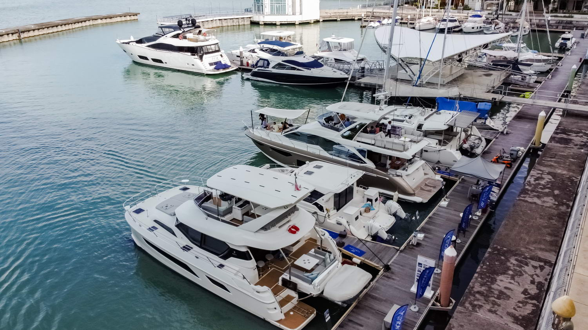
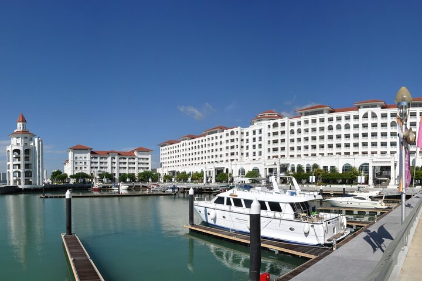
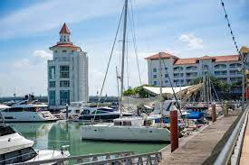
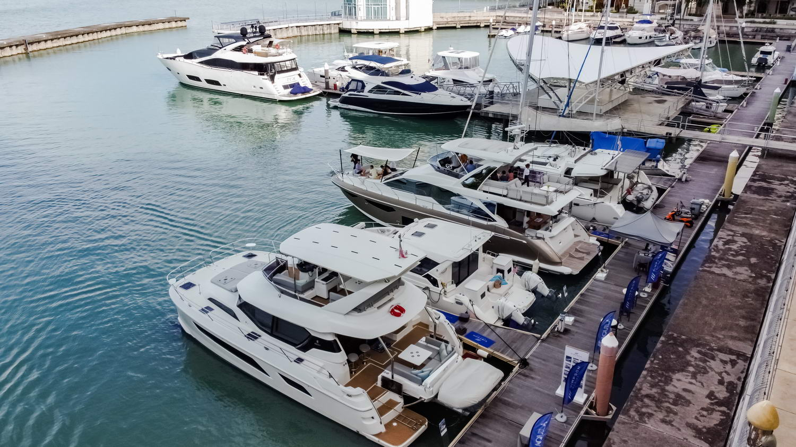
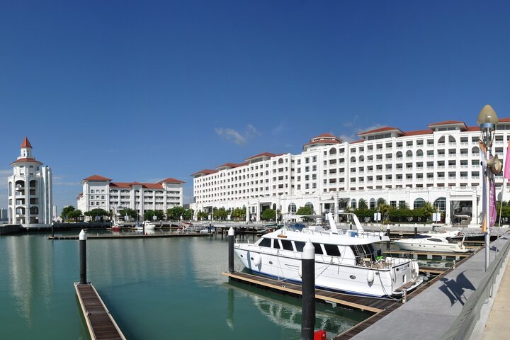
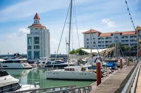

Penang Island
Penang, often referred to as the “Pearl of the Orient,” is a beautiful Malaysian island famous for its rich heritage, vibrant street art, and scenic waterfronts. Beyond its culture and cuisine, Penang is also growing as a favorite yacht destination for local and international charters.
The Straits Quay Marina is Penang’s primary hub for yachting, offering world-class facilities and direct access to restaurants, galleries, and shopping. Whether it’s a sunset cruise or a private party onboard, Penang’s calm waters and skyline create the perfect backdrop.
Discover George Town’s UNESCO sites, explore nearby islands like Pulau Jerejak or venture further to Langkawi — Penang is your perfect northern sailing base.
 




